The preceding results identify \(C\) with its double opposite on objects and morphisms. We now upgrade this to coherent duality on the universe of categories. This permits systematic passage between the cartesian and cocartesian theories, and supplies the dual constructions whose proofs were postponed in Chapter 9.
12.4.1 Formal duality
We start by establishing that passing to opposites is an invertible operation.
Proposition 12.4.1. The functor \((-)\catop \colon \Cat \to \Cat\) is an equivalence.
Proof
It suffices to check that the functor is fully faithful and strongly essentially surjective. Strong essential surjectivity follows from Corollary 12.3.11. It remains to prove full faithfulness.
Fix categories \(C\) and \(D\). We must show that the induced map \[ \Cat(C,D)^\simeq \to \Cat(C\catop,D\catop)^\simeq, \quad f \mapsto f\catop \] is an equivalence. We claim that an inverse is given by sending \(g\colon C\catop \to D\catop\) to the composite \[ C \iso (C\catop)\catop \xrightarrow{g\catop} (D\catop)\catop \iso D\, . \] This follows right away from Corollary 12.3.19 and Remark 12.3.12.
Corollary 12.4.2. The opposite category functor has the following properties.
(i) It commutes with limits (in particular with pullbacks). In particular, we have \(*\catop \iso *\) and for categories \(C\) and \(D\) there exists a canonical isomorphism \[ (C \times D) \catop \iso C\catop \times D\catop\, . \]
(ii) For any categories \(C\) and \(D\) there exists a canonical isomorphism \[ \Fun(C,D)\catop \iso \Fun(C\catop,D\catop)\, . \]
Proof
Equivalences of categories commute with limits and colimits, and this explains assertion (i). For any categories \(A\), \(C\) and \(D\), the evaluation functor \[ \ev\colon C\times\Fun(C,D)\to D \] induces thanks to the compatibility of \((-)\catop\) with cartesian products a functor \[ \ev\catop\colon C\catop\times\Fun(C,D)\catop\to D\catop \] hence, by transposition, a comparison functor \[ \delta\colon\Fun(C,D)\catop\to\Fun(C\catop,D\catop)\, . \] On the other hand, there are canonical equivalences: \begin{align*} \Map(A,\Fun(C,D))&\simeq \Map(A\times C,D)\\ &\simeq \Map((A\times C)\catop,D\catop)\\ &\simeq \Map(A\catop\times C\catop,D\catop)\\ &\simeq \Map(A\catop,\Fun(C\catop,D\catop))\\ &\simeq \Map((A\catop)\catop,\Fun(C\catop,D\catop)\catop)\\ &\simeq \Map(A,\Fun(C\catop,D\catop)\catop)\, . \end{align*} where the final equivalence is induced by the equivalence \(A\iso(A\catop)\catop\). Using Corollary 12.3.19, we see that the equivalence \[ \Map(A,\Fun(C,D)) \simeq \Map(A,\Fun(C\catop,D\catop)\catop) \] obtained above as a composition of equivalences is induced by postcomposition with \(\delta\catop\colon\Fun(C,D)\to\Fun(C\catop,D\catop)\catop\). Therefore, \(\delta\catop\), and hence \(\delta\), is an equivalence.
Lemma 12.4.3. There is a unique equivalence \([1]\iso [1]\catop\) exchanging \(0\) and \(1\).
Proof
Since \([1](0,1)=[1]\catop(1,0)\), there is a canonical morphism from \(1\) to \(0\) in \([1]\catop\), i.e. a functor \[ u\colon [1]\to[1]\catop \] inducing the map \[ u^\simeq\colon\{0,1\}\iso\{0,1\} \] defined by the rule \(0\mapsto 1\) and \(1\mapsto 0\). The functor \(u\) must be fully faithful because it induces the endomorphism of the empty anima or of the terminal anima \[ [1](x,y)\to[1]\catop(u(x),u(y)) \] for all \(x,y : [1]^\simeq\). Being strongly essentially surjective and fully faithful, the functor is thus an equivalence. Any equivalence exchanging the two objects must carry the unique nonidentity morphism to the unique nonidentity morphism, so the anima of all equivalences from \([1]\) to \([1]\catop\) is contractible.
Remark 12.4.4. The preceding lemma can also be proved by a functoriality argument.
To construct an equivalence \([1]\catop \iso [1]\), it will suffice to show that for every category \(C\) there is an equivalence \(\Map([1],C) \simeq \Map([1]\catop,C)\) which is natural in \(C\). But we have
\begin{align*}
\Map([1],C)
&\simeq \sum_{(x,y):C^{\simeq} \times C^{\simeq}} C(x,y)\\
&\simeq \sum_{(x,y):C^{\simeq} \times C^{\simeq}} C(y,x)\\
&\simeq \Map([1],C\catop) \simeq \Map([1]\catop,C).
\end{align*}
where the middle equivalence is given by the flip map \(C^{\simeq} \times C^{\simeq} \to C^{\simeq} \times C^{\simeq}\) sending \((x,y)\) to \((y,x)\). Given a functor \(f\colon C \to C'\), the above equivalences fit in a commutative diagram
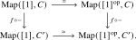
Proposition 12.4.5. There is a preferred equivalence \(\Fun([1],C)\catop \iso \Fun([1],C\catop)\) which fits
functorially in a commutative diagram
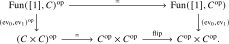
Proof
Using Lemma 12.4.3 together with assertion (ii) of Corollary 12.4.2, we have \[ \Fun([1],C)\catop\iso\Fun([1]\catop,C\catop)\iso\Fun([1],C\catop)\, . \] These isomorphisms fit in the stated commutative square.
Corollary 12.4.6. Let \(f\colon C \to D\) be a functor.
• If \(f\) admits a right (left) adjoint section, then \(f\catop\) admits a left (right) adjoint section.
• The functor \(f\) is initial (resp. terminal) if and only if \(f\catop\) is terminal (resp. initial).
• The functor \(f\) is proper (resp. smooth) if and only if \(f\catop\) is smooth (resp. proper).
• If \(f\) is a cocartesian (resp. cartesian) fibration, then \(f\catop\colon C\catop \to D\catop\) is a cartesian (resp. cocartesian) fibration.
• If \(f\) is a left (resp. right) fibration, then \(f\catop\colon C\catop \to D\catop\) is a right (resp. left) fibration.
Proof
These assertions follow from Corollary 12.4.2 and Proposition 12.4.5. For the second assertion, use the definitions of initial and terminal functors. The third then follows from the definition of proper and smooth functors, since opposite categories commute with pullbacks.
Corollary 12.4.7 (Smooth base change in disguise). Let \(p\colon A \to B\) be a smooth functor and consider a commutative square
 where \(f\) is terminal and both \(\varphi\) and \(\psi\) are right fibrations. Then,
for any functor \(v\colon B'\to B\), the induced functor
\[
B'\times_BX\longrightarrow B'\times_BY
\]
is terminal.
where \(f\) is terminal and both \(\varphi\) and \(\psi\) are right fibrations. Then,
for any functor \(v\colon B'\to B\), the induced functor
\[
B'\times_BX\longrightarrow B'\times_BY
\]
is terminal.
Proof
Pass to opposite categories. By Corollaries 12.4.2 and 12.4.6, the resulting square satisfies the proper case of Corollary 9.6.7. It follows that the opposite of the displayed functor is initial, so the displayed functor is terminal.
12.4.2 Cartesian straightening
We may use coherent duality to dualize the straightening/unstraightening correspondence from Section 8.7.
Definition 12.4.8. Let \(S\) be a small category, corresponding to an object \(s \colon * \to \Cat\). We let \[ \Cart(S) \subseteq \Cat_{/S}:=\Cat_{/s} \] denote the (non-full) subcategory of cartesian fibrations over \(S\) and cartesian functors over \(S\) (defined as an appropriate variation of Construction 8.7.3 and of Construction 8.7.4). We denote by \[ \RFib(S) \subseteq \Cart(S) \] the full subcategory spanned by the right fibrations over \(S\).
Lemma 12.4.9. The equivalence \((-)\catop\colon\Cat\iso\Cat\) induces an equivalence \[ \Cat_{/S}\iso\Cat_{/S\catop}\, . \] This equivalence restricts to equivalences of the form \[ \RFib(S)\iso\LFib(S\catop)\qquad\text{and}\qquad \Cart(S)\iso\CoCart(S\catop)\, . \]
Proof
The equivalence \((-)\catop\) carries the slice over \(S\) to the slice over \(S\catop\), which gives the first assertion. Its restrictions follow from Corollary 12.4.6.
Theorem 12.4.10 (Straightening/unstraightening). For every small category \(S\) there are canonical equivalences \[ \Un\colon \Fun(S\catop,\Cat) \iso \Cart(S) \qquad\text{and}\qquad \Un\colon \PSh(S) \iso \RFib(S). \]
Proof
Combine Theorem 8.7.8 for \(S\catop\) with Lemma 12.4.9.
Corollary 12.4.11. For any small category \(S\), there is a canonical equivalence of the form \[ \Fun(S,\Cat\catop)^\simeq\simeq\Cart(S)^\simeq\, . \]
Proof
By Corollary 12.4.2 and Corollary 12.3.11, there are canonical isomorphisms \begin{align*} \Fun(S,\Cat\catop)^\simeq &\simeq \bigl(\Fun(S,\Cat\catop)\catop\bigr)^\simeq\\ &\simeq \Fun(S\catop,(\Cat\catop)\catop)^\simeq\\ &\simeq \Fun(S\catop,\Cat)^\simeq\\ &\simeq \Cart(S)^\simeq, \end{align*} where the final isomorphism is straightening from Theorem 12.4.10.
Corollary 12.4.12. Let \(p\colon C \to S\) be a cartesian fibration. We assume given a subcategory \(i\colon W\hookrightarrow C\) such that \(p\circ i\) is a cartesian fibration and \(i\) is a cartesian functor over \(S\). Then the functor \(\eta_C\colon C \to L_S(C,W)\) exhibits \(L_S(C,W)\) as the localization of \(C\) by the morphisms in \(W\) which are sent to isomorphisms in \(S\).
Proof
This follows from Theorem 8.8.9 for \(p\catop\colon C\catop\to S\catop\) and applying the functor \((-)\catop\).
12.4.3 Coherent involutivity
We have previously shown that every category \(C\) is equivalent to its double opposite \((C\catop)\catop\), and that these equivalences are compatible with individual functors \(f\colon C \to D\). We will now enhance this to a coherent identification \(\id_{\Cat} = ((-)\catop)\catop\) of endofunctors on \(\Cat\).
Construction 12.4.13. Let \(\RFib\) be the full subcategory of \(\Fun([1],\Cat)\) whose objects are
the right fibrations between small categories.
The functor
\[
\ev_1\colon\Fun([1],\Cat)\to\Cat
\]
is a cocartesian fibration. Since, for any functor between small synthetic
categories \(u\colon A\to B\), the functor
\[
u_!\colon\Cat_{/A}\to\Cat_{/B}
\]
induced by composition with \(u\) has a right adjoint (defined by pullbacks along \(u\)),
the functor \(\ev_1\) is a cartesian fibration as well.
The property of right fibrations to be stable under pullbacks in \(\Cat\)
precisely means that the restriction of \(\ev_1\) to \(\RFib\) remains a cartesian fibration:
\[
\ev_1\colon\RFib\to\Cat\, .
\]
For any small category \(C\)
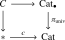
We define \(\mathrm{Rep}\) as the full subcategory of \(\RFib\) whose objects are the fibrations between small categories whose domain has a terminal object. Proposition 12.3.18 implies that taking the codomain of these right fibrations defines a functor \[ \ev_1\colon \mathrm{Rep}\to\Cat \] that is a cocartesian fibration, so that the embedding of \(\mathrm{Rep}\) into \(\RFib\) defines a cocartesian functor over \(\Cat\).
Lemma 12.4.14. The functor \(\ev_1\colon \mathrm{Rep}\to\Cat\) is a directed univalent
cocartesian fibration. More precisely, there is a canonical pullback
square of the form
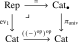
Proof
By definition, there is the pullback square below.
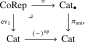 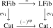
Lemma 12.4.15. Recall that there is an ambient universe of large categories \(\Cat'\).
Consider an equivalence of the form \(\varphi'\colon\Cat'\to\Cat'\)
that we suppose to restrict to an equivalence of the form
\[
\varphi\colon\Cat\to\Cat\, .
\]
We also assume that there is an equivalence \([1]\iso\varphi([1])\)
together with commutative triangles of the form
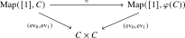
Proof
We form the following pullback
square.
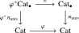 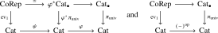
Proposition 12.4.16. There is a functorial equivalence \(C\iso (C\catop)\catop\) inducing a pullback square of the form
Proof
It follows from Proposition 12.4.5 that we may apply Lemma 12.4.15 to \(\varphi=((-)\catop)\catop\).
Remark 12.4.17. The previous proposition allows a fairly explicit description of the objects and morphisms
of \(\Cat_{\bullet}\), using the equivalence with \(\mathrm{Rep}\).
An object of \(\mathrm{Rep}\) is a right fibration \(p\colon X\to A\) together with a
terminal object \(x\) of \(X\). But then the induced functor \(X_{/x}\to A_{/p(x)}\)
preserves terminal objects and is a morphism of right fibrations over \(A\). Therefore, it is
an equivalence. Since the projection \(X_{/x}\to X\) is an equivalence as well, this means that,
up to equivalence, \(p\) is totally determined by the pair \((A,a)\) consisting of a small synthetic
category \(A\) and of an object \(a\) of \(A\). A morphism in \(\mathrm{Rep}\)
is by definition a commutative square in \(\Cat\) of the form
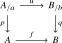
This allows to describe objects and morphisms in any Grothendieck construction
(i.e. in the total category associated to a functor with values in \(\Cat\)).
Indeed, let \(F\colon A\to \Cat\) be a functor from a category \(A\)
to the category of small categories. We can then form the following
pullback square.
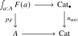 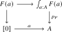
Remark 12.4.18. The embedding
\[
\mathrm{Rep}\hookrightarrow\RFib
\]
is a cocartesian functor over \(\Cat\) by definition.
The meaning of Proposition 12.4.16 is thus that the Yoneda embedding
\[
h_C\colon C\hookrightarrow\PSh(C)
\]
is a natural transformation from the identity of \(\Cat\) to the functor \(\RFib\)
that sends a small category \(C\) to \(\RFib(C)=\PSh(C)\) and a functor
\(u\colon C\to D\) to the induced left Kan extension
\[
u_!\colon \PSh(C)\to \PSh(D)\, .
\]
The associated commutative square
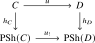